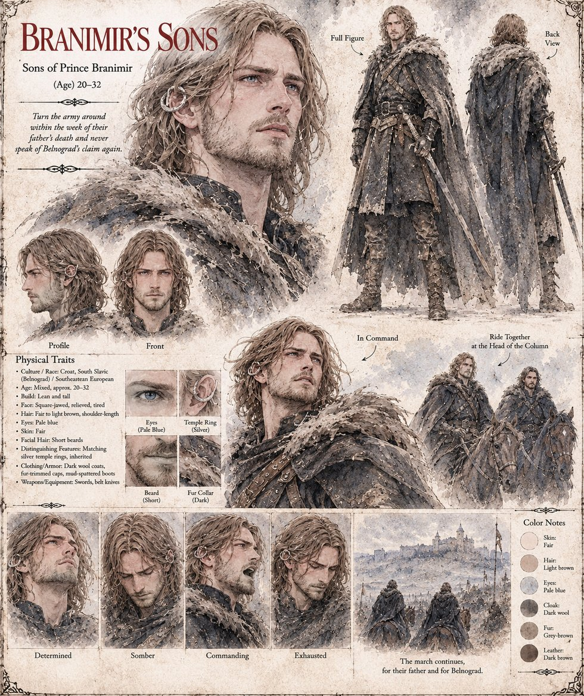

Branimir's Sons
Sons of Prince Branimir · approx. 20–32 years old
The sons of Prince Branimir of Belnograd. When their father dies of river fever within sight of Ardenwake, never having ordered the first assault, they are freed of a grudge none of them had personally felt the weight of; they turn the army around within the week and never speak of Belnograd's old claim again. The manuscript gives neither their number nor their names. They are the end of a grudge that began with Branimir's great-grandmother and the Vigil's refusal to heal her infant.
The sheet gives their ages as approximately 20 to 32 and draws them lean and tall and square-jawed, with fair to light-brown shoulder-length hair, pale blue eyes, short beards and matching silver temple rings inherited from their father, in dark wool coats with fur-trimmed caps and mud-spattered boots, with swords and belt knives; it shows two of them riding together at the head of the column. Its expressions are determined, somber, commanding and exhausted. Their number, ages and looks are the sheet's; the manuscript gives neither. The sheet's culture line reads Croat, South Slavic (Belnograd).